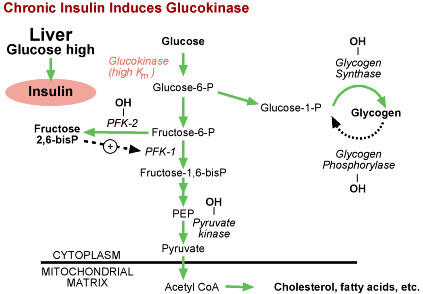

|
Carbohydrate Metabolism Regulation Problem SetQuestion 4: Insulin Regulation of GlucokinaseTutorial to help answer the questionGlucokinase is also regulated by insulin in liver, but not via phosphorylation. How is this regulation accomplished?
TutorialWhen glucose concentrations become very high or are chronically
high, insulin has another card to play in order to clear glucose from the blood.
Recall that glucokinase, a liver enzyme, has a relatively high Km for
glucose, and therefore only really comes into action when glucose concentrations
are high. This enzyme is well suited for removing glucose from the blood
for two reasons.
Now, before we move on to consider glucagon action, this is a good time to take
a last look at the whole picture of insulin action in liver, which includes coordinated
regulation of six enzymes in order to achieve glucose uptake and storage (just
follow the green arrows!). 
The University of Arizona March 16, 2001 Revised: August, 2004 Contact the Development Team http://www.biology.arizona.edu |